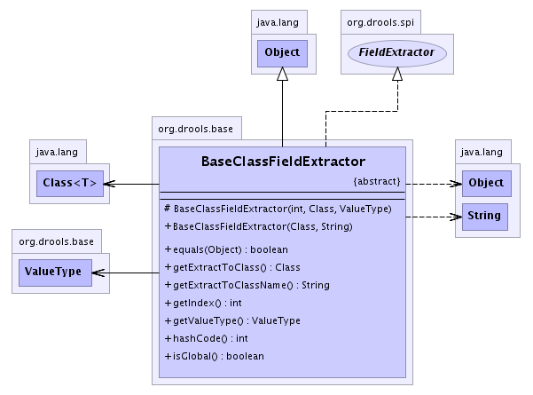

org.drools.base
Class BaseClassFieldExtractor
java.lang.Object
 org.drools.base.BaseClassFieldExtractor
org.drools.base.BaseClassFieldExtractor
- All Implemented Interfaces:
- java.io.Serializable, Extractor, FieldExtractor
- Direct Known Subclasses:
- BaseBooleanClassFieldExtractor, BaseByteClassFieldExtractor, BaseCharClassFieldExtractor, BaseDoubleClassFieldExtractor, BaseFloatClassFieldExtractor, BaseIntClassFieldExtractor, BaseLongClassFieldExtractors, BaseObjectClassFieldExtractor, BaseShortClassFieldExtractor
public abstract class BaseClassFieldExtractor
- extends java.lang.Object
- implements FieldExtractor
This is the supertype for the ASM generated classes for accessing a field.
- See Also:
- Serialized Form
-
- 
|
Constructor Summary |
|
BaseClassFieldExtractor(java.lang.Class clazz,
java.lang.String fieldName)
This is the constructor to be used |
protected |
BaseClassFieldExtractor(int index,
java.lang.Class fieldType,
ValueType valueType)
This constructor is not supposed to be used from outside the class hirarchy |
| Methods inherited from class java.lang.Object |
clone, finalize, getClass, notify, notifyAll, toString, wait, wait, wait |
| Methods inherited from interface org.drools.spi.Extractor |
getBooleanValue, getByteValue, getCharValue, getDoubleValue, getFloatValue, getHashCode, getIntValue, getLongValue, getNativeReadMethod, getShortValue, getValue, isNullValue |
BaseClassFieldExtractor
protected BaseClassFieldExtractor(int index,
java.lang.Class fieldType,
ValueType valueType)
- This constructor is not supposed to be used from outside the class hirarchy
- Parameters:
index - fieldType - valueType -
BaseClassFieldExtractor
public BaseClassFieldExtractor(java.lang.Class clazz,
java.lang.String fieldName)
- This is the constructor to be used
- Parameters:
clazz - fieldName -
getIndex
public int getIndex()
- Specified by:
getIndex in interface FieldExtractor
getExtractToClass
public java.lang.Class getExtractToClass()
- Specified by:
getExtractToClass in interface Extractor
getExtractToClassName
public java.lang.String getExtractToClassName()
- Specified by:
getExtractToClassName in interface Extractor
getValueType
public ValueType getValueType()
- Specified by:
getValueType in interface Extractor
isGlobal
public boolean isGlobal()
- Specified by:
isGlobal in interface Extractor
hashCode
public int hashCode()
- Overrides:
hashCode in class java.lang.Object
equals
public boolean equals(java.lang.Object object)
- Overrides:
equals in class java.lang.Object